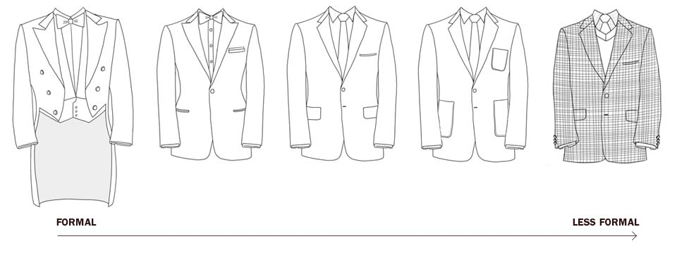

The Formality Spectrum
There's nothing worse than feeling over- or under-dressed in a particular social setting. This is because, on an unconsious level, it shows a lack of understanding; you're dressing 'wrong' because you didn't know what was appropriate and what was acceptable for the specific occasion.
We tell our clients that it's always better to be slightly over-dressed than slightly under-dressed, and I would err on the side of formality wherever you're unsure about whether your outfit is appropriate. But how do you err on the side of formality? More importantly, what is formality?
The Formality Spectrum in Clothing
One of the simplest tricks to making more appropriate outfits for different occasions is to think of formality as a spectrum. On one end, we have the most formal outfits a man can wear - black tie and white tie - and on the other end, we have the least formal outfit a man can wear. I'd say it's being nude, but I'm sure there's worse out there.

Both white tie (a tailcoat, or morning suit) and black tie (a tuxedo) outfits have a single purpose: to frame the body in a universally flattering way that makes a man look as 'masculine' as possible.
Traditionally they are black, closely fitted to the body, with very little embellishment in terms of pockets, colours or patterns. The shirt is plain white without pockets, and the shoes worn are simple, plain patent leather slip-ons which, at most, will have a tassle.
So that's the most formal. Very plain and very black. But that's not something to wear every day - so from here evolved the suit. It's usually a step-back from black in colour, but still dark - deep charcoal and navy are the two classic options.
Jeans are casual, sure. But there are formal jeans and informal jeans. A slim, dark pair of jeans can be far more formal than a pair of dress pants – you’ve just gotta wear them in the right way.
In men’s fashion, think of formality as a gradient. On one end you have the tuxedo and tailcoat – the two most formal men’s outfits. On the other hand, you have nakedness. If a particular item of clothing brings your outfit closer to the tailcoat (which is black, dark, plain, crisp, sleek) then it is formal. If it brings it away from the tailcoat (light, bright, colourful, embellished, complicated) then it is less formal.
There are many, many, many jackets that would suit your needs – look for sport coats and blazers (google the distinction between these two styles) that have lighter colours. Greys, charcoals, patterns – that sort of thing. Doesn’t have to be bold or garish, just things which give the garment more depth and texture. Dark, slim, plain jeans are your friend, as are dress shoes, dark sneakers, work boots and so on.